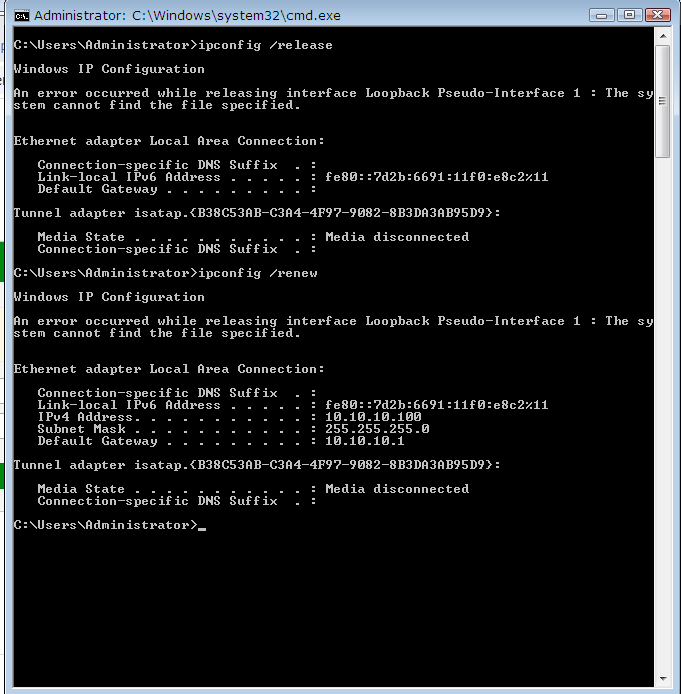

DHCP Relay allows FortiGate to forward DHCP packets from clients in one subnet to a DHCP server located in a different subnet.
┌─────────────┐ ┌─────────────┐ ┌─────────────┐
│ CLOUD │ │ FortiGate │ │ Ubuntu │
│ Internet │◄────►│ │◄────►│DHCP Server │
└──────┬──────┘ wan1 └──────┬──────┘ port3└──────┬──────┘
│ 192.168.x.x│ 172.16.10.2│172.16.10.10
│ │ │
│ │ port2 │
│ │ 10.10.10.1/24 │
│ ┌─────┴─────┐ │
│ │ Windows │ │
│ │ Client │ │
│ └───────────┘ │
└──────────────────────────────────────────┘
| Device | Interface | IP Address | Role |
|---|---|---|---|
| FortiGate | wan1 | DHCP (192.168.37.x) | Internet Connection |
| FortiGate | port2 | 10.10.10.1/24 | Client Gateway + DHCP Relay |
| FortiGate | port3 | 172.16.10.2/24 | DHCP Server Connection |
| Ubuntu | eth0 | 172.16.10.10/24 | DHCP Server |
| Windows | eth0 | DHCP (10.10.10.x) | DHCP Client |
sudo nano /etc/netplan/01-netcfg.yamlnetwork:
version: 2
renderer: networkd
ethernets:
ens3:
dhcp4: no
addresses:
- 172.16.10.10/24
gateway4: 172.16.10.2
nameservers:
addresses:
- 8.8.8.8
- 8.8.4.4sudo netplan applyconfig firewall policy
edit 1
set name "Ubuntu-to-Internet"
set srcintf "port3"
set dstintf "wan1"
set srcaddr "all"
set dstaddr "all"
set action accept
set schedule "always"
set service "ALL"
set nat enable
next
endping 8.8.8.8
ping google.comsudo apt update
sudo apt install isc-dhcp-server -ysudo nano /etc/dhcp/dhcpd.conf# Assign IPs to clients in subnet 10.10.10.0/24
subnet 10.10.10.0 netmask 255.255.255.0 {
range 10.10.10.100 10.10.10.200;
option routers 10.10.10.1;
option domain-name-servers 8.8.8.8, 8.8.4.4;
default-lease-time 600;
max-lease-time 7200;
}
# Declare Ubuntu's own subnet (no IP assignment needed)
subnet 172.16.10.0 netmask 255.255.255.0 {
}sudo nano /etc/default/isc-dhcp-serverINTERFACESv4="ens3"sudo systemctl restart isc-dhcp-server
sudo systemctl enable isc-dhcp-server
sudo systemctl status isc-dhcp-serverconfig system interface
edit "port2"
set mode static
set ip 10.10.10.1 255.255.255.0
set allowaccess ping
next
edit "port3"
set mode static
set ip 172.16.10.2 255.255.255.0
set allowaccess ping
next
endconfig system interface
edit "port2"
set dhcp-relay-service enable
set dhcp-relay-ip "172.16.10.10"
next
endconfig firewall local-in-policy
edit 1
set intf "port2"
set srcaddr "all"
set dstaddr "all"
set action accept
set service "DHCP"
set schedule "always"
next
endconfig firewall policy
edit 2
set name "DHCP-Server-to-Client"
set srcintf "port3"
set dstintf "port2"
set srcaddr "all"
set dstaddr "all"
set action accept
set schedule "always"
set service "ALL"
next
endipconfig /renew
ipconfig /all✅ Expected result: IP in range 10.10.10.100 - 10.10.10.200
execute dhcp lease-listdiagnose debug application dhcprelay -1
diagnose debug enable
# Disable debug:
diagnose debug disablediagnose sniffer packet port2 "port 67 or port 68" 4After running ipconfig /renew, the Windows client successfully receives an IP address from the DHCP server via FortiGate Relay:

| Issue | Cause | Solution |
|---|---|---|
| Windows no IP | Missing Local-In Policy | Check Step 3.3 |
| Ubuntu can't ping 8.8.8.8 | No NAT policy on FortiGate | Add policy with set nat enable |
| apt update DNS error | No nameserver configured | Check Netplan file |
| Command | Description | Run on |
|---|---|---|
diagnose debug application dhcprelay -1 | Debug DHCP Relay | FortiGate |
diagnose sniffer packet port2 "port 67 or port 68" 4 | Capture DHCP packets | FortiGate |
execute dhcp lease-list | View DHCP leases | FortiGate |
sudo tail -f /var/log/syslog | grep dhcp | View DHCP Server logs | Ubuntu |